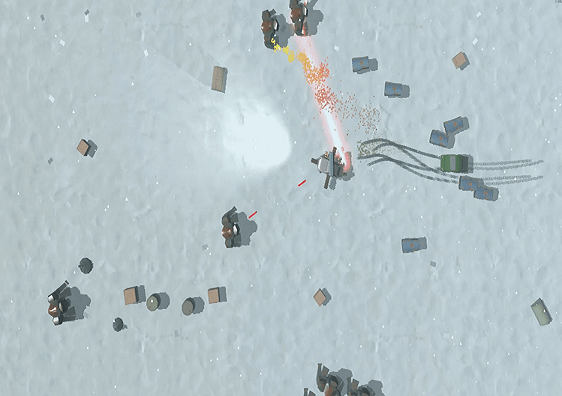

Team Project
- Worked in a team of 11
- Responsible for all AI
- DirectX
- C++
- A* Pathfinding
This is a rougelite car game, with a focus on fast-paced action with a high amount of enemies around the player at all times.
Worked with ten other people to create a game from the ground up in DirectX over four months.
Here I was responsible for all AI, with a focus on performance.
For the large number of enemies to be able to exist at the same without any lag, a lot of effort had to be spent on making the AI cost as little to run as possible.
Techniques I implemented to achieve this was; computing a less accurate path for enemies that were far away, calculating one path for a group of enemies, instead of one path for each enemy, etc.